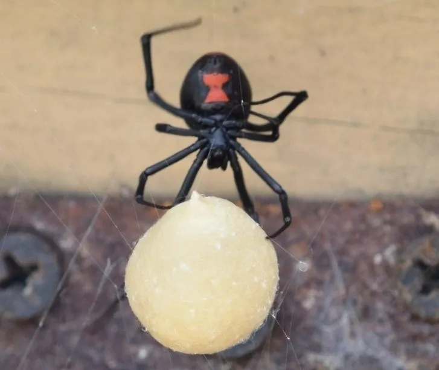

蛛形动物 · 动物界
黑寡妇蜘蛛 Latrodectus mactans

北美洲著名的毒蜘蛛，雌蛛腹部有红色沙漏状斑纹，毒性较强，被咬后可出现剧痛和肌肉痉挛，需及时就医。
- 分类
- 门节肢动物门纲蛛形纲目蜘蛛目科球蛛科属寇蛛属
- 栖息环境
- 干燥灌丛、石堆、杂物堆、房舍角落与灌木根部
- 地理分布
- 北美洲南部和东部及中美洲部分地区
- 保护级别
- IUCN 暂无评估；非中国原产，在中国无保护级别
物种志
黑寡妇蜘蛛雌蛛体长 8–10 毫米，足展 25–30 毫米，体色漆黑发亮，腹部球形，腹面通常有一个鲜红的沙漏状斑纹；雄蛛仅 4–5 毫米，体色较浅，斑纹更明显。它结不规则的乱网，隐藏在地面石块、灌木根部和杂物堆中，夜间捕食昆虫和其他小型节肢动物。
它分布于北美洲的温暖地区，栖息于干燥的灌丛、石堆、垃圾堆和房屋角落。雌蛛产下数个卵囊，每个卵囊含 100–400 枚卵，母蛛会守护卵囊一段时间，幼蛛孵化后先聚集再扩散。黑寡妇蜘蛛毒性较强，毒液含神经毒素，被咬后局部剧痛并向周围扩散，可能伴随肌肉痉挛、出汗等症状，需避免接触并及时就医；雌蛛在交配后常捕食雄蛛，“黑寡妇”之名由此而来。
形态与习性
- 食性昆虫和其他小型节肢动物
- 体长雌蛛 8–10 mm，雄蛛 4–5 mm
- 寿命雌蛛约 1–3 年
- 繁殖卵生，每卵囊 100–400 枚，母蛛护卵
- 活动节律夜间活动，白天藏在乱网附近
- 毒性毒性较强，被咬可致剧痛和肌肉痉挛，需及时就医
趣味知识
- 雌性黑寡妇蜘蛛腹部腹面通常有鲜红的沙漏状斑纹，是它最醒目的标志。
- 交配后雌蛛常捕食雄蛛，“黑寡妇”这个名字由此而来。
- 黑寡妇毒液属神经毒素，被咬后可能出现肌肉痉挛，应尽快就医。